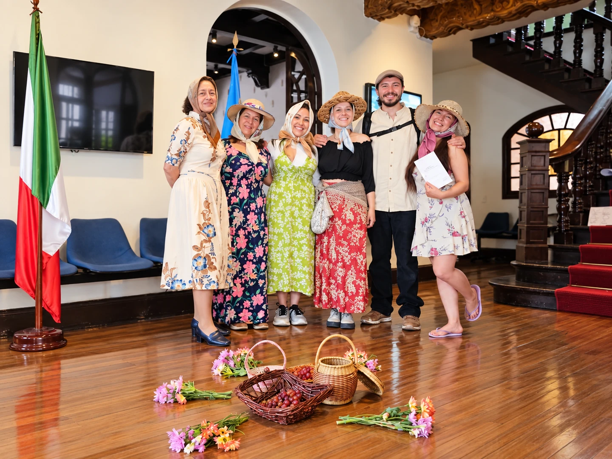

Canti Popolari Italiani

← Lenguas vivasLas voces
Canta che ti passa · registro de la muestra Cantos y acciones compartidas · registro de la muestra
Canta, canta
che ti passa.
Recorrer Italia a través de sus melodías, voces e historias. Un encuentro con el idioma y la memoria de sus territorios.
Quiero cantar con ustedes
Las voces
del encuentro.
Dos registros de la muestra del Laboratorio de Canti Popolari Italiani.